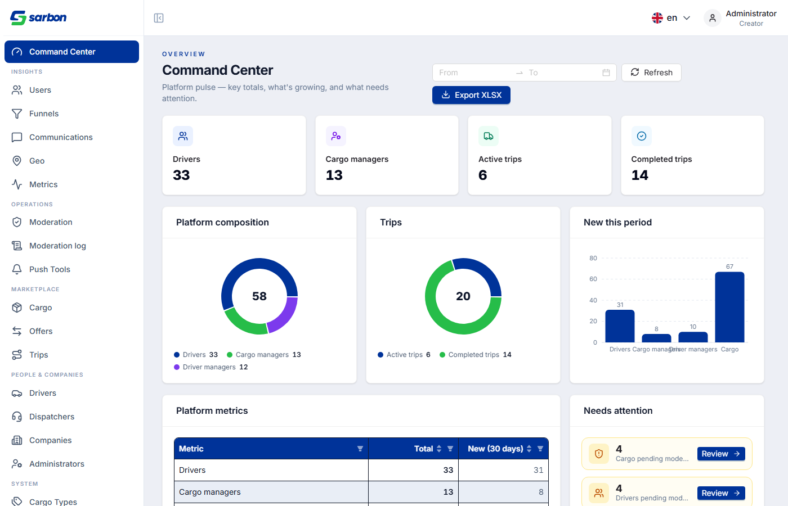
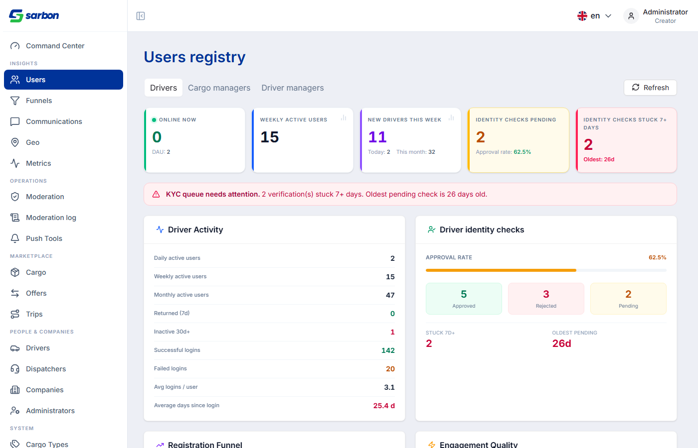
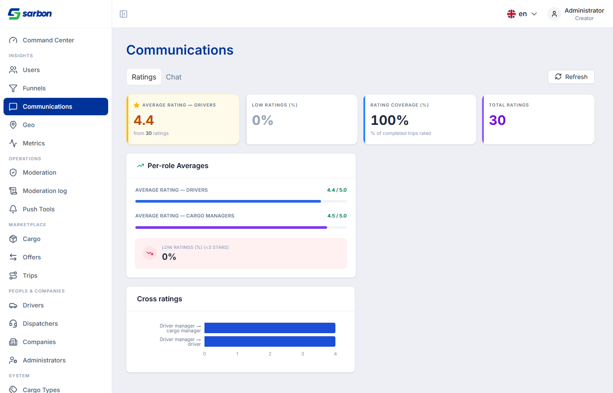
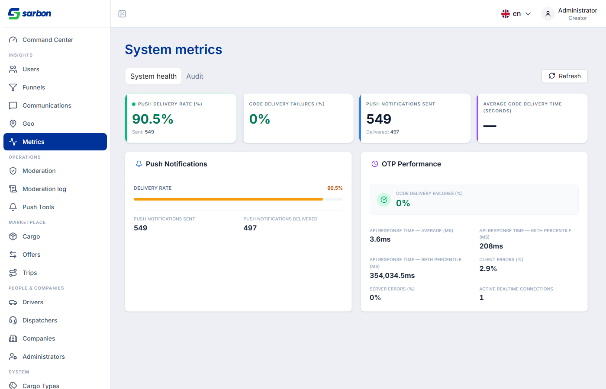
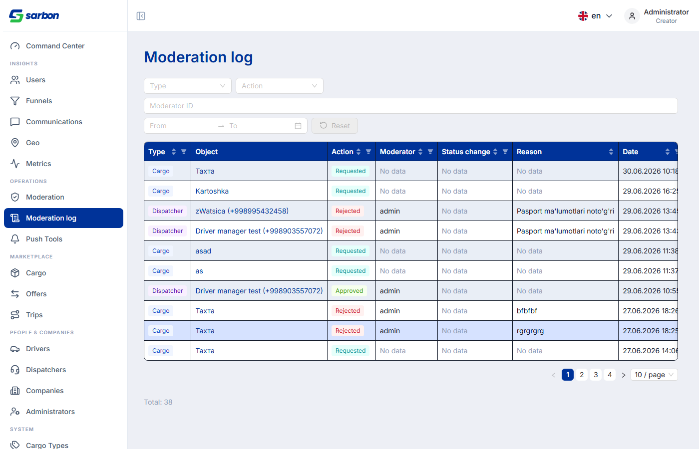
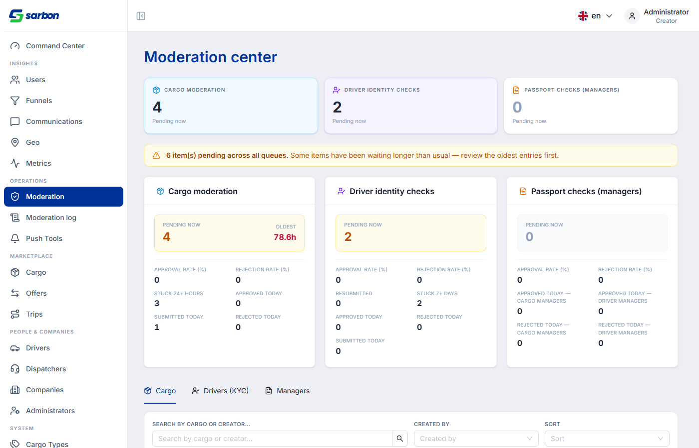
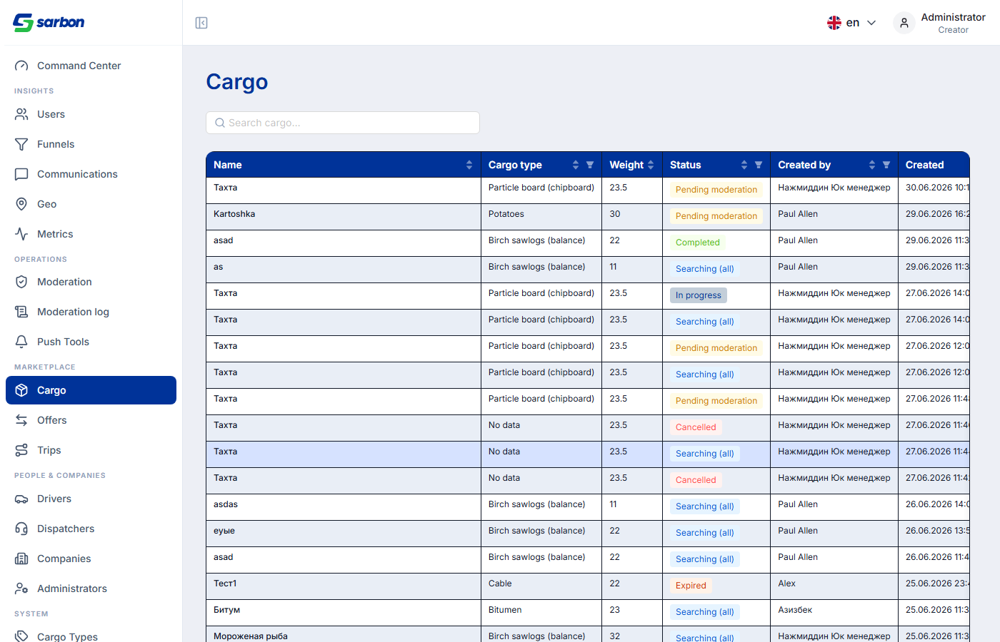
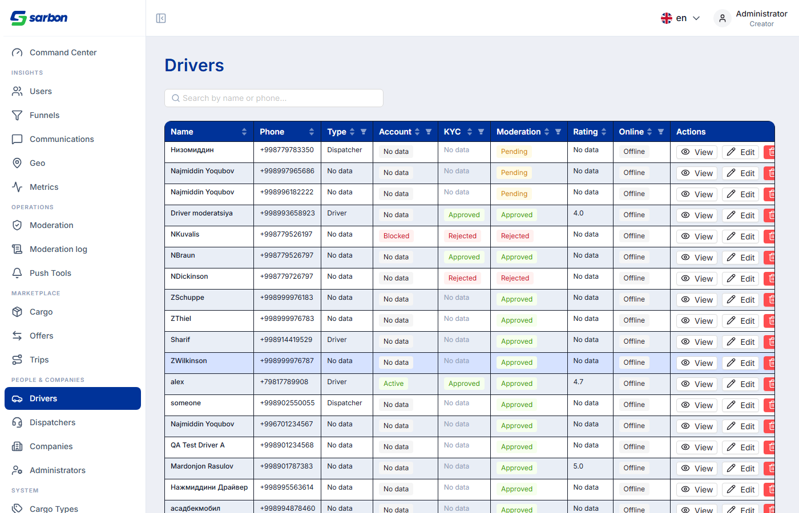

i Краткое резюме
30.06.2026 — работа по Sarbon Frontend, фокус на Admin Panel. Закрыто 5 дефектов (неверные имена полей → «Нет данных» на ключевых страницах, пустые столбцы в таблице грузов, неправильный тип графика, три регрессии из code-review) и выполнено 9 улучшений/фич (пагинация всех таблиц, исторические тренды, специализированные аналитические виды для 5 страниц, TrendBadge, фильтр по диапазону дат, полная i18n). Создано 8 новых компонентов. Воротные проверки: tsc -b — чисто, eslint --max-warnings 0 — 0 предупреждений, pnpm build — exit 0.
pagination={false}).
- Communications и Metrics tabs — показывают корректные поля, но бэкенд на dev/staging пока возвращает
nullдля ratings/chat аналитики (событий нет). QA проверить в production-среде или после наполнения данными. - Исторические тренды (WAU/DAU) — findHistoricalData ищет time-series в payload.breakdown; подтвердить, что бэкенд реально кладёт туда массивы (сейчас fallback на period-bar).
- Специализированные виды (Ratings, Chat, SystemHealth, Audit, Moderation) — спроектированы по OpenAPI spec, не верифицированы live-кликом под реальной авторизацией.
1 Новые фичи и улучшения Sarbon Admin · что добавлено
| Что сделано | Назначение / результат | Где (ключевые файлы) |
|---|---|---|
| Специализированные аналитические виды для 5 страниц + TrendBadge фича | Новые компоненты: AdminRatingsSummaryView, AdminChatSummaryView, AdminSystemHealthSummaryView, AdminAuditSummaryView, AdminModerationSummaryView. Разделы Ratings/Chat/SystemHealth/Audit/Moderation получили hero-KPI, alert-баннеры, детальные секции. Новый TrendBadge — дельта-стрелки «+12%↑» рядом с DAU/WAU. |
src/components/shared/admin/Admin*SummaryView.tsx, TrendBadge.tsx (новые) |
| Специализированные виды для Users-вкладок (Cargo Managers, Driver Managers) фича | Два новых компонента: AdminCargoManagersSummaryView (CM Activity, Cargo Pipeline, Offer Speed, Quality), AdminDriverManagersSummaryView (DM Activity, Fleet Health). Hero KPI с TrendBadge. Проводка в AdminUsersPage для всех трёх вкладок. |
AdminCargoManagersSummaryView.tsx, AdminDriverManagersSummaryView.tsx (новые) |
| Исторический time-series в графиках + fix Registration Funnel фича | Новый findHistoricalData(breakdown, metricHints) ищет time-series массивы в payload.breakdown → click-to-chart показывает линейный тренд, а не 3 статичных бара. Registration Funnel исправлен: читает из breakdown.registration_funnel (не из flat totals). |
AdminDriversSummaryView.tsx, AdminCargoManagersSummaryView.tsx, AdminDriverManagersSummaryView.tsx |
| Пагинация на всех 16 таблицах улучшение | Все таблицы с pagination={false} → pageSize:10, pageSizeOptions:[10,20,50,100], hideOnSinglePage:true. Фильтрация AntD теперь работает по всему in-memory dataset (не только по странице). |
16 файлов: AdminDriversPage, AdminCargoPage, AdminModeration, AdminModerationLogPage, AdminAnalyticsView и др. |
| Command Center: фильтр по диапазону дат фича | Добавлен DatePicker.RangePicker в шапку страницы. Все 4 запроса (overview, analytics, financial, drivers analytics) получают date_from/date_to. Заголовок «Новых (30 дней)» переключается в «Новых (период)». |
AdminCommandCenterPage.tsx, все 15 локалей |
| Карточки активности: прогресс-бары → плоские строки с trend-стрелками улучшение | DAU/WAU/MAU отображаются как divide-y-список строк: label | bold value | TrendBadge. Убраны прогресс-бары «% от total» (визуально шумные, несравнимые). Inverse-метрики (inactive_30d, logins_failed) получают inverse={true}. |
AdminDriversSummaryView, AdminCargoManagersSummaryView, AdminDriverManagersSummaryView |
| Moderation Log: фильтры по колонкам, локализация статусов улучшение | distinctColumnFilter добавлен на все колонки страницы журнала модерации. Пустые ячейки теперь показывают локализованное «Нет данных» вместо —. Статусы from_status/to_status переведены через i18n. |
AdminModerationLogPage.tsx |
| Moderation: фильтры колонок + переработка FilterBar улучшение | Добавлены distinctColumnFilter для weight/volume/created_at/updated_at. ModerationFilterBar переработан: 4-колоночный CSS-grid с подписями групп + строка «N фильтров активно + Сбросить». |
AdminModerationPage.tsx, DriverModerationPanel.tsx, ManagerModerationPanel.tsx, ModerationFilterBar.tsx |
| Command Center: i18n для заголовков лидербордов и breakdown улучшение | Заголовки секций лидербордов (Top Drivers By GMV, By Trips...) и названия breakdown-групп/категорий переведены через t() вместо prettifyKey(). Параметр t: TFunction добавлен в topToBoards(). |
AdminCommandCenterPage.tsx, все 15 локалей |
2 Исправленные дефекты 5 багов
| Дефект | Причина | Исправление | Файлы |
|---|---|---|---|
| Admin Cargo: все колонки показывали «Нет данных» data bug | Поля строились с PascalCase именами (Name, Weight, Status, CreatedByName) — как у Go-структур. API возвращает snake_case (name, weight, status, created_by_name). AntD dataIndex читал undefined. |
Все ~50 field references переведены в snake_case. CargoTypeNameUZ/RU/EN заменён на cargoTypeLabel(toRecord(row.cargo_type)). |
AdminCargoPage.tsx |
| Admin Metrics: SystemHealth и Audit показывали «Нет данных» data bug | View читали несуществующие поля (uptime_pct, error_rate_pct, total_actions). API возвращает push_sent/push_delivered/otp_median_delivery_seconds (SystemHealth) и phone_changes/password_changes/master_token_uses (Audit). |
Обе вьюхи полностью переписаны под реальные поля из OpenAPI spec. | AdminSystemHealthSummaryView.tsx, AdminAuditSummaryView.tsx |
| Admin Communications: Ratings и Chat показывали «Нет данных» data bug | Несовпадение имён полей: avg_rating вместо avg_driver_stars/avg_cm_stars/avg_dm_stars; messages_today вместо today; total_conversations вместо total_window и т.д. |
Обе вьюхи переписаны под spec. Graceful null-fallback когда данных нет. |
AdminRatingsSummaryView.tsx, AdminChatSummaryView.tsx |
| Admin Users: тренд-дровер показывал бар-чарт вместо линейного ui bug | (1) Fallback ветка openChart всегда ставила chartType:'bar'. (2) Regex time-ключей /^(date|week|month)$/ не матчил составные поля типа week_start, period_label. |
Fallback 'bar' → 'line'. Regex расширен до /(^|_)(date|week|month|day|period|time)($|_)/i. |
AdminDriversSummaryView.tsx, AdminCargoManagersSummaryView.tsx, AdminDriverManagersSummaryView.tsx |
| Code-review: 3 регрессии (zero-bars, cargo_type, acceptKyc) review find | (1) renderBarChart рендерил невидимые zero-height бары (фильтр v>0 был только в pie). (2) cargoTypeName не обрабатывал cargo_type как plain string. (3) acceptKyc POST не имел body. |
Добавлен && v>0 в bar-фильтр. Добавлен || str(row.cargo_type) fallback. Добавлен data: {} к мутации. |
AdminAnalyticsView.tsx, AdminCargoPage.tsx, DriverModerationPanel.tsx |
3 Детальный таймлайн дня 14 задач · хронологически
Все записи внесены 30.06.2026 в bug.md (корень репозитория).
Admin Cargo: все колонки пустые — PascalCase vs snake_case data bug
- Что: /admin/cargo загружал строки, но каждая колонка показывала «нет значения».
- Почему: page построена с
dataIndexв PascalCase (Name, Weight, Status, CreatedByName) по аналогии с Go-struct — но API возвращает snake_case. AntD читалundefinedпо каждому ключу. - Исправление: ~50 field references переведены в snake_case; cargo-type ID заменён на cargoTypeLabel(). pnpm build exit 0.
Code-review: 3 регрессии после предыдущего релиза review fix
- (1) renderBarChart — zero-height бары на all-zero данных (фильтр
v>0был упущен, в отличие от renderPieChart). - (2) cargoTypeName — plain-string
cargo_typeмолча отбрасывался (нет fallback). - (3) acceptKyc POST — тело запроса отсутствовало (
data: {}не передавалось). - Где: AdminAnalyticsView.tsx, AdminCargoPage.tsx, DriverModerationPanel.tsx.
Admin Users: специализированные виды + TrendBadge + click-to-chart фича
- Было: все три вкладки Users (Drivers/CM/DM) использовали generic AdminAnalyticsView без специализации.
- Сделано: новый TrendBadge.tsx — инлайн-значок
+12%↑ (+5)с inverse-режимом. Два новых компонента: AdminCargoManagersSummaryView (Online Now, DAU+trend, New This Week, Active Cargos, No Offer 24h alert) и AdminDriverManagersSummaryView (Online Now, DAU+trend, Avg Fleet Size, Empty DMs alert). AdminUsersPage проводит все три вкладки через viewComponent.
Admin analytics: исторические тренды + fix Registration Funnel + 5 специализированных видов фича
- Было: графики показывали 3 статичных агрегатных бара (Today/Week/Month), а не временной ряд. Registration Funnel брал данные из flat totals, хотя API кладёт их в breakdown.registration_funnel.
- Сделано: findHistoricalData(breakdown, metricHints) ищет time-series массивы в breakdown → chartType:'line' с подписью «Прогресс во времени». Fallback — бар с подписью «Агрегаты периода». bPick(section, field) для funnel-данных.
- 5 новых компонентов: AdminRatingsSummaryView, AdminChatSummaryView, AdminSystemHealthSummaryView, AdminAuditSummaryView, AdminModerationSummaryView. Проводка в Communications, Metrics и Moderation Pages.
Admin Users trend-дровер: бар-чарт вместо линейного ui bug
- Причина: (1) fallback ветка openChart всегда ставила chartType:'bar'. (2) Regex
/^(date|week|month|day|period|time)$/не матчил составные ключи (week_start, period_label, date_from). - Исправление: fallback → 'line'; regex →
/(^|_)(date|week|month|day|period|time)($|_)/i. - Где: 3 файла AdminDriversSummaryView/AdminCargoManagersSummaryView/AdminDriverManagersSummaryView.
Admin Users: хардкоженные английские строки в трёх summary views i18n bug
- Причина: ~50 строковых литералов без t(); отсутствовали 3 namespace'а (chartDrawer, labels, alerts) в 15 локалях; нейминг-коллизия переменной drawer с useState-переменной (Babel parse error).
- Исправление: добавлены admin.pages.analytics.{chartDrawer,labels,alerts} в все 15 локалей; переменная переименована в drawerT; ~50 строк заменены на lbl2()/alertT()/drawerT().
Admin Communications: Ratings и Chat показывали «Нет данных» data bug
- Причина: View читали несуществующие поля: avg_rating (нет в spec) вместо avg_driver_stars/avg_cm_stars; messages_today вместо today и т.д.
- Исправление: обе вьюхи переписаны под реальный OpenAPI: Ratings → avg_driver_stars/low_rating_pct/stars_distribution; Chat → today/week/total_window/median_first_reply_minutes.
Admin Metrics: SystemHealth и Audit показывали «Нет данных» data bug
- Причина: SystemHealth читал uptime_pct/error_rate_pct/api_response_ms (не существуют); Audit читал total_actions/unique_admins (не существуют). API реально возвращает push/OTP-метрики и phone/password-change метрики.
- Исправление: обе вьюхи полностью переписаны. SystemHealth: push delivery stats + OTP performance. Audit: phone/password changes, master token uses, top lists.
Admin Activity cards: прогресс-бары → плоские строки с TrendBadge улучшение
- Было: DAU/WAU/MAU в трёх Summary views рендерились как прогресс-бары «% от total» — визуально шумно, несравнимо между периодами, нет трендов.
- Сделано: divide-y-список строк: label | bold value | TrendBadge. Добавлены
dau_growth_pct/wau_growth_pct/mau_growth_pct/inactive_30d_growth_pct. Inverse-метрики (inactive_30d, logins_failed) → inverse={true}.
Admin Command Center: i18n заголовков лидербордов и breakdown улучшение
- Было: заголовки «Top Drivers By Gmv», «By Trips» и breakdown-категории (cargo_active/searching_all) — всегда английские (prettifyKey()).
- Сделано: параметр t: TFunction добавлен в topToBoards(); добавлены namespace'ы topSections/breakdownSections/breakdownCategories в все 15 локалей.
Admin Moderation Log: фильтры колонок + локализация статусов улучшение
- Было: ни одного in-column фильтра; пустые ячейки →
—; from_status/to_status через prettifyKey() (английский). - Сделано: distinctColumnFilter на все колонки; t('admin.common.noValue') вместо
—; statusLabel через i18n. Колонки обёрнуты в useMemo. Sorter на все колонки.
Admin Moderation: фильтры колонок + переработка FilterBar улучшение
- Было: weight/volume/created_at/updated_at — без фильтров; пустые ячейки → '-'; FilterBar — плоский flex-wrap без лейблов.
- Сделано: distinctColumnFilter на date/measurement колонки. fmtDate перемещён внутрь компонента. ModerationFilterBar → 4-col CSS grid с лейбл-группами и строкой «N активных + Сбросить».
Все 16 таблиц получили AntD-пагинацию улучшение
- Было: все таблицы с pagination={false} — весь датасет на одной «странице», нет контролов размера.
- Сделано: pagination={ pageSize:10, pageSizeOptions:[10,20,50,100], showSizeChanger:true, hideOnSinglePage:true } на всех 16 таблицах. Фильтрация AntD корректно работает по всему in-memory набору.
- Где: Drivers, CargoTypes, Cargo, Dispatchers, Admins, Trips, Offers, Companies, Moderation (2 таблицы), ManagerModerationPanel, DriverModerationPanel, CommandCenter (2 таблицы), GeoInsightsPanel, ModerationLog, AdminAnalyticsView.
Command Center: фильтр по диапазону дат фича
- Было: все 4 запроса всегда возвращали данные за умолчательный 30-дневный период, без возможности выбрать диапазон.
- Сделано: DatePicker.RangePicker в шапке; date_from/date_to ISO-параметры во все 4 запроса. Заголовок «Новых (30 дней)» → «Новых (период)» при активном фильтре. Даты после сегодня — disabled.
- Ключи i18n: dateFilter/dateFrom/dateTo/newColPeriod в 15 локалях.
4 Качество и проверки
- 0 ошибок tsc -b (только pre-existing unused-var)
- 0 предупреждений eslint --max-warnings 0
- exit 0 pnpm build (tsc + vite)
- 8 новых компонентов-файлов: TrendBadge, AdminCargoManagersSummaryView, AdminDriverManagersSummaryView, AdminRatingsSummaryView, AdminChatSummaryView, AdminSystemHealthSummaryView, AdminAuditSummaryView, AdminModerationSummaryView
- Затронуто ~30 файлов в рабочем дереве (M + A)
- 15 локалей обновлены: uz/oz/ru/en/tr/zh/kk/tg/ky/tk/lv/lt/et/pl/de
- Новые i18n namespace'ы: admin.pages.analytics.chartDrawer/labels/alerts, commandCenter.topSections/breakdownSections/breakdownCategories, commandCenter.dateFilter/newColPeriod
- OpenAPI spec — источник истины для поправленных field names
- Communications (Ratings/Chat) — поля исправлены, но dev/staging не имеет данных → тест нужен в production или при наполненных событиях.
- Исторические тренды — findHistoricalData ищет breakdown-массивы; нужно подтвердить, что бэкенд реально их отдаёт (сейчас fallback на bar).
- Новые специализированные виды (5 компонентов) — работоспособность подтверждена по коду + OpenAPI, live click-через QA под авторизацией не выполнялся.
5 Скриншоты страницы с изменениями · live staging, 30.06.2026
Сделаны через Playwright из запущенного dev-сервера под реальной авторизацией (admin/Creator). Показывают актуальное состояние после всех правок дня.
Command Center — фильтр по диапазону дат

Users — TrendBadge + специализированные Summary Views

Communications — исправлены имена полей API


Metrics — исправлены имена полей API


Moderation & Moderation Log — distinctColumnFilter + пагинация


Cargo & Drivers — исправлены имена колонок


6 Где что лежит артефакты дня
| Артефакт | Путь |
|---|---|
| Журнал исправлений (14 записей 30.06) | bug.md (строки 1–400, записи 30.06.2026) |
| Краткая сводка для PM (Excel) | daily-report/30.06.26/report-30.06.26.xlsx |
| Новые analytics-компоненты (8 штук) | src/components/shared/admin/Admin*SummaryView.tsx · TrendBadge.tsx |
| Специализированные виды Users | src/components/shared/admin/AdminCargoManagersSummaryView.tsx · AdminDriverManagersSummaryView.tsx |
| Модифицированные страницы Admin | src/pages/admin/command-center/ · communications/ · metrics/ · moderation/ · moderation-log/ · cargo/ · drivers/ |
| Отчёт предыдущего дня | daily-report/29.06.26/index.html |
7 Рекомендации и приоритеты
- 1. QA-клик Communications и Metrics — перейти в production или заполнить staging ratings/chat событиями, чтобы верифицировать исправленные views под реальными данными.
- 2. Подтвердить time-series в breakdown — выяснить у бэкенда, есть ли уже исторические массивы в payload.breakdown для WAU/DAU (или когда появятся) — только тогда линейный тренд-дровер заработает в полную силу.
- 3. Закоммитить и пуш — всё дерево изменений в uncommitted состоянии (staged/modified); провести QA-проход и сделать коммит.
- 4. Бэкенд для модерации — фильтр очереди модерации (из вчера) и журнал модерации по-прежнему ждут backend endpoints/параметров; фронт готов.
- 5. Виртуализация больших таблиц — при росте данных рассмотреть AntD virtual или серверную пагинацию; сейчас load-all in-memory.